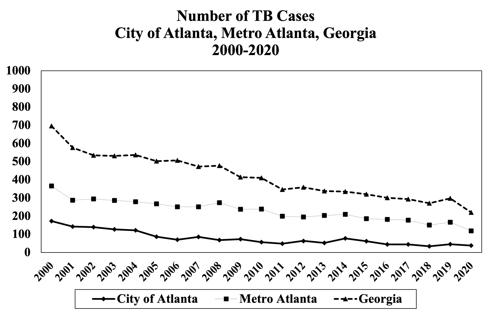
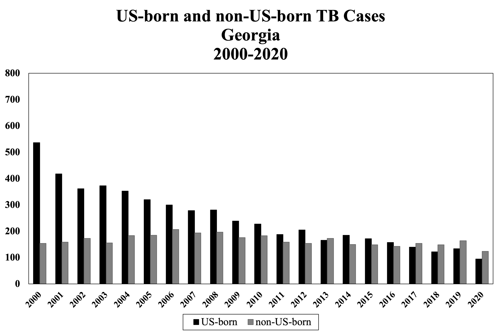

- Worldwide, TB is an enormous global public health problem.
The World Health Organization (WHO) estimates that there
were about 10 million new cases of TB disease and more than 1.5 million deaths due to TB in 2020.
- TB remains the leading cause of death due to an infectious disease
globally and prior to the COVID-19 pandemic was the leading cause of death due to a single infectious disease.
TB is the leading cause of death in persons with human
immunodeficiency virus (HIV), acquired immunodeficiency
syndrome (HIV/AIDS) worldwide (although not in the United
States).The COVID-19 pandemic has impacted progress in TB control and prevention globally and
led to increased TB-related mortality.
- Approximately one-fourth of the world’s population is estimated to be infected with and harbors
Mycobacterium
tuberculosis (i.e., have latent TB infection) and therefore is at risk for developing active disease.
- The interaction between the TB epidemic and the HIV/AIDS
epidemic is lethal. TB adds to the burden of illness of HIV infected people and shortens their life
expectancy,
while the HIV epidemic spurs the spread of TB.
- In the U.S. there was a resurgence of TB from 1985 to 1992. The
number of cases increased 20% during this time period, peaking in
1992 with 26,673 cases reported. The increased case
numbers were attributed to the HIV epidemic, decreased funding for public health, immigration from countries
where TB is endemic, and transmission of TB in congregate settings such
as hospitals, correctional institutions, and homeless shelters.
- Due to a number of public health interventions, TB cases began
declining in 1992 in the U.S. From 1992 through 2020, there has
been a 74% decrease in the number of cases, as TB control was
strengthened nationally. In 2020, the U.S. reported 7,174 new
TB cases (2.2 per 100,000 population). The decrease over this time span
is attributed to strengthened public health infrastructure for
TB prevention and control nationwide. However, there was about a
~20% decrease in reported cases between 2019 and 2020.
The COVID-19 pandemic has probably affected reported TB incidence
in the U.S. in several ways, including a combination of TB
underdiagnosis and a true reduction in incidence.
- TB is not evenly distributed among the U.S. population. Cases
occur disproportionately in urban areas, in conditions of poverty and over-crowding, and among racial and
ethnic
minorities and foreign-born persons. In 2020, ~70% of the U.S. TB
cases occurred among non-US born persons (56.6% in Georgia).
- The average lifetime risk of developing active TB following TB
infection, if no treatment of latent TB infection is received, is
approximately 5-10% (with the greatest risk occurring in the
first two years after infection). UNAIDS estimates that persons
infected with both TB and HIV are 30 to 50 times more likely to
develop TB disease than those infected with TB but who do not
have HIV infection (10% per year risk of progression to active
TB disease among people living with HIV who have LTBI).
- Drug-resistant TB is a major challenge to global TB control and
associated with higher morbidity and mortality compared to
drug-susceptible disease. The treatment of highly drug resistant M. tuberculosis requires longer,
more
complex and expensive treatment regimens. Multidrug-resistant TB (MDRTB) is defined as resistance to at
least
isoniazid (INH) and ri fampin (RIF); extensively drug resistant (XDR)-TB is defined as
MDR-TB plus resistance to a fluoroquinolone (FQN) drug plus
an injectable drug (kanamycin, amikacin, and/or capreomycin).
MDR-TB treatment regimens are complicated with many potential adverse effects and may require up to 24
months of treatment.
- Every culture-positive TB case for which an isolate is submitted to the state health department is subjected
to whole-genome sequencing (WGS) through CDC. WGS data is used to identify and confirm recent transmission and
supplement contact investigations done by the state and local health departments
- The State of Georgia had TB rates higher than the U.S.
average for several decades but rates have decreased in recent years, and currently Georgia has a TB incidence
rate below the U.S. national average. In 2020, Georgia had 212 new TB cases and the incidence in Georgia was less than that for the U.S.
(2.1 TB cases per 100,000 population in Georgia vs. 2.2 cases per 100,000
population in the U.S.). Of the culture-confirmed TB cases tested for drug susceptibility in Georgia in
2020, 8.9%
had resistance to INH, and
1.2% were MDR.


- More than half of TB cases in Georgia occur in the metropolitan Atlanta area.